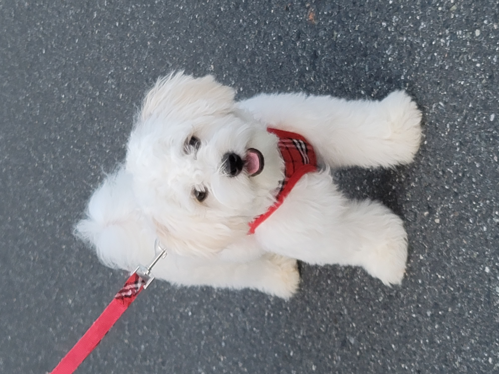

Milo is a dog. He is a shichon so he is a small dog. He is very smelly, so he needs a bath very often. He likes to eat grass and play with his toys. He has white fur with some brown fur on his back and ears. He has big ears that are very smelly. He also has a small nose that is black and very wet. His claws are sharp and he hates getting them cut. He also has giant eyes and he cries a lot. He is almost two years old, but in dog years he is almost 22 years old.
Milo likes to go on walks and eat grass outside. He loves to eat grass, even though it is bad for him. His tail gets lots of knots and they are very hard to pull out. His fur is very thick so it is easy for him to get knots. He is a hypo allergenic dog, so he won't shed. He likes to play with a laser pointer and is like a cat. He can climb stairs really well, but sometimes he trips. He once got hurt almost a year ago and started limping and is still doing it because now it is a habit.
Milo does not know a lot tricks. He does not know that many tricks because he is not smart and can't follow instructions. Milo knows a little bit of "stay" but does not really follow it if he foes not want to. He knows how to sit, but only if he gets food he will do it. Milo is bad at eating food. He will only eat food if somebody says"good boy" once he finishes.
Milo barks a lot. Whenever somebody rings on the doorbell, he barks really loud and runs toward the door. This is really annoying, because he is not trained,so if we open the door he will run out and escape. He only tried to escape three times before. The first time it took 15 minutes to bring him back. The second time, he ran towards another dog after the door was open and we had to chase him. The latest time he tried to escape was when the door was open, and he went into the garage while it was open. He did not run though, because he liked the boxes and started licking them. We were able to bring him back inside when we closed the garage.